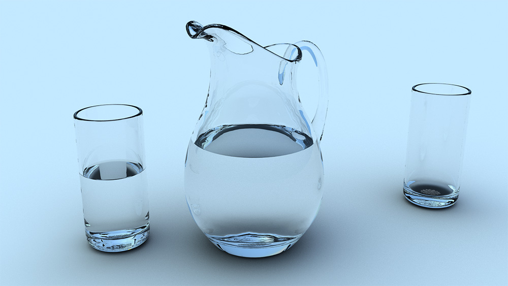

Glass (2015)
This image brings me more peace than any other that I have created. When I wake up in the morning and the cares of the world start to crash in, drinking a glass of water helps me to stay focused on staying healthy and pure: two important tasks that are so easy to overlook. It revives me so much that I feel as if new life is being poured into me, becoming in me "a spring of water welling up to eternal life." Jesus said that God would give the Holy Spirit to anyone who asks for it. For many years that made no sense to me. But now, I think it does, and for that, I am eternally grateful.
This is my first image using water and glass together. It was modeled with Blender and rendered with Yafaray. The pitcher was modeled after a William Yeoward Crystal design that I love, and the glass is one in our house from Crate and Barrel. The objects are broken into meshes depending on each index of refraction: one for glass, one for water, and one for the glass-water interface. Using direct-lighting with the sunsky, this image didn't take very long to render (about 15 minutes). The trickiest parts were debugging the normals and the ray/caustics depth. A depth of 20 gave the best quality, and increasing it beyond that made no discernable difference.
© W. Rhett Davis 2015